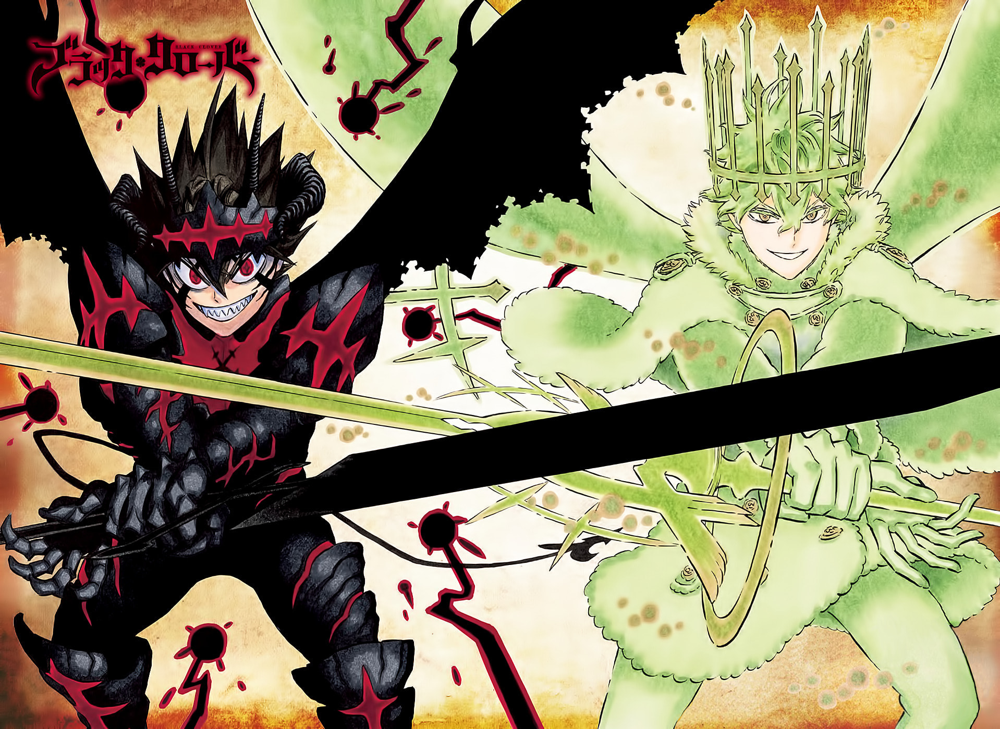

Quem somos?
Somos uma organização sem fins lucrativos que atua como animais abandonados.🔝
Missão da ONG Slk cria
Promover a oportunidade de acolhimento aos animais abandonados.
Contato com a ONG Slk Cria
Endereço: Rua Huron 214, Anchieta - RJ
Tel: (21) 99999-2703
organizacaoslkcria@gmail.com